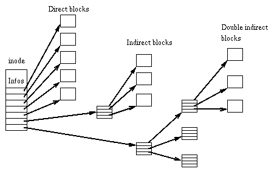
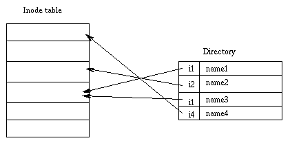
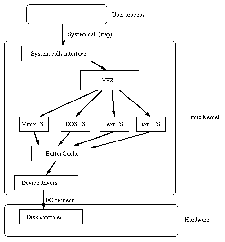

This paper was first published in the Proceedings of the First Dutch International Symposium on Linux, ISBN 90-367-0385-9.
Linux is a Unix-like operating system, which runs on PC-386 computers. It was implemented first as extension to the Minix operating system [Tanenbaum 1987] and its first versions included support for the Minix filesystem only. The Minix filesystem contains two serious limitations: block addresses are stored in 16 bit integers, thus the maximal filesystem size is restricted to 64 mega bytes, and directories contain fixed-size entries and the maximal file name is 14 characters.
We have designed and implemented two new filesystems that are included in the standard Linux kernel. These filesystems, called ``Extended File System'' (Ext fs) and ``Second Extended File System'' (Ext2 fs) raise the limitations and add new features.
In this paper, we describe the history of Linux filesystems. We briefly introduce the fundamental concepts implemented in Unix filesystems. We present the implementation of the Virtual File System layer in Linux and we detail the Second Extended File System kernel code and user mode tools. Last, we present performance measurements made on Linux and BSD filesystems and we conclude with the current status of Ext2fs and the future directions.
In its very early days, Linux was cross-developed under the Minix operating system. It was easier to share disks between the two systems than to design a new filesystem, so Linus Torvalds decided to implement support for the Minix filesystem in Linux. The Minix filesystem was an efficient and relatively bug-free piece of software.
However, the restrictions in the design of the Minix filesystem were too limiting, so people started thinking and working on the implementation of new filesystems in Linux.
In order to ease the addition of new filesystems into the Linux kernel, a Virtual File System (VFS) layer was developed. The VFS layer was initially written by Chris Provenzano, and later rewritten by Linus Torvalds before it was integrated into the Linux kernel. It is described in The Virtual File System.
After the integration of the VFS in the kernel, a new filesystem, called the ``Extended File System'' was implemented in April 1992 and added to Linux 0.96c. This new filesystem removed the two big Minix limitations: its maximal size was 2 giga bytes and the maximal file name size was 255 characters. It was an improvement over the Minix filesystem but some problems were still present in it. There was no support for the separate access, inode modification, and data modification timestamps. The filesystem used linked lists to keep track of free blocks and inodes and this produced bad performances: as the filesystem was used, the lists became unsorted and the filesystem became fragmented.
As a response to these problems, two new filesytems were released in Alpha version in January 1993: the Xia filesystem and the Second Extended File System. The Xia filesystem was heavily based on the Minix filesystem kernel code and only added a few improvements over this filesystem. Basically, it provided long file names, support for bigger partitions and support for the three timestamps. On the other hand, Ext2fs was based on the Extfs code with many reorganizations and many improvements. It had been designed with evolution in mind and contained space for future improvements. It will be described with more details in The Second Extended File System
When the two new filesystems were first released, they provided essentially the same features. Due to its minimal design, Xia fs was more stable than Ext2fs. As the filesystems were used more widely, bugs were fixed in Ext2fs and lots of improvements and new features were integrated. Ext2fs is now very stable and has become the de-facto standard Linux filesystem.
This table contains a summary of the features provided by the different filesystems:
| Minix FS | Ext FS | Ext2 FS | Xia FS | |
|---|---|---|---|---|
| Max FS size | 64 MB | 2 GB | 4 TB | 2 GB |
| Max file size | 64 MB | 2 GB | 2 GB | 64 MB |
| Max file name | 16/30 c | 255 c | 255 c | 248 c |
| 3 times support | No | No | Yes | Yes |
| Extensible | No | No | Yes | No |
| Var. block size | No | No | Yes | No |
| Maintained | Yes | No | Yes | ? |
Every Linux filesystem implements a basic set of common concepts derivated from the Unix operating system [Bach 1986] files are represented by inodes, directories are simply files containing a list of entries and devices can be accessed by requesting I/O on special files.
Each file is represented by a structure, called an inode. Each inode contains the description of the file: file type, access rights, owners, timestamps, size, pointers to data blocks. The addresses of data blocks allocated to a file are stored in its inode. When a user requests an I/O operation on the file, the kernel code converts the current offset to a block number, uses this number as an index in the block addresses table and reads or writes the physical block. This figure represents the structure of an inode: 
Directories are structured in a hierarchical tree. Each directory can contain files and subdirectories.
Directories are implemented as a special type of files. Actually, a directory is a file containing a list of entries. Each entry contains an inode number and a file name. When a process uses a pathname, the kernel code searchs in the directories to find the corresponding inode number. After the name has been converted to an inode number, the inode is loaded into memory and is used by subsequent requests.
This figure represents a directory: 
Unix filesystems implement the concept of link. Several names can be associated with a inode. The inode contains a field containing the number associated with the file. Adding a link simply consists in creating a directory entry, where the inode number points to the inode, and in incrementing the links count in the inode. When a link is deleted, i.e. when one uses the rm command to remove a filename, the kernel decrements the links count and deallocates the inode if this count becomes zero.
This type of link is called a hard link and can only be used within a single filesystem: it is impossible to create cross-filesystem hard links. Moreover, hard links can only point on files: a directory hard link cannot be created to prevent the apparition of a cycle in the directory tree.
Another kind of links exists in most Unix filesystems. Symbolic links are simply files which contain a filename. When the kernel encounters a symbolic link during a pathname to inode conversion, it replaces the name of the link by its contents, i.e. the name of the target file, and restarts the pathname interpretation. Since a symbolic link does not point to an inode, it is possible to create cross-filesystems symbolic links. Symbolic links can point to any type of file, even on nonexistent files. Symbolic links are very useful because they don't have the limitations associated to hard links. However, they use some disk space, allocated for their inode and their data blocks, and cause an overhead in the pathname to inode conversion because the kernel has to restart the name interpretation when it encounters a symbolic link.
In Unix-like operating systems, devices can be accessed via special files. A device special file does not use any space on the filesystem. It is only an access point to the device driver.
Two types of special files exist: character and block
special files. The former allows I/O operations in character
mode while the later requires data to be written in block mode
via the buffer cache functions. When an I/O request is made on
a special file, it is forwarded to a (pseudo) device driver. A
special file is referenced by a major number, which identifies
the device type, and a minor number, which identifies the unit.
The Virtual File System
The Linux kernel contains a Virtual File System layer which is used during system calls acting on files. The VFS is an indirection layer which handles the file oriented system calls and calls the necessary functions in the physical filesystem code to do the I/O.
This indirection mechanism is frequently used in Unix-like operating systems to ease the integration and the use of several filesystem types [Kleiman 1986, Seltzer et al. 1993].
When a process issues a file oriented system call, the kernel calls a function contained in the VFS. This function handles the structure independent manipulations and redirects the call to a function contained in the physical filesystem code, which is responsible for handling the structure dependent operations. Filesystem code uses the buffer cache functions to request I/O on devices. This scheme is illustrated in this figure: 
The VFS defines a set of functions that every filesystem has to implement. This interface is made up of a set of operations associated to three kinds of objects: filesystems, inodes, and open files.
The VFS knows about filesystem types supported in the kernel. It uses a table defined during the kernel configuration. Each entry in this table describes a filesystem type: it contains the name of the filesystem type and a pointer on a function called during the mount operation. When a filesystem is to be mounted, the appropriate mount function is called. This function is responsible for reading the superblock from the disk, initializing its internal variables, and returning a mounted filesystem descriptor to the VFS. After the filesystem is mounted, the VFS functions can use this descriptor to access the physical filesystem routines.
A mounted filesystem descriptor contains several kinds of data: informations that are common to every filesystem types, pointers to functions provided by the physical filesystem kernel code, and private data maintained by the physical filesystem code. The function pointers contained in the filesystem descriptors allow the VFS to access the filesystem internal routines.
Two other types of descriptors are used by the VFS: an inode descriptor
and an open file descriptor. Each descriptor contains informations related to
files in use and a set of operations provided by the physical filesystem code.
While the inode descriptor contains pointers to functions that can be used to
act on any file (e.g. create, unlink), the file descriptors
contains pointer to functions which can only act on open files (e.g.
read, write).
The Second Extended File System
The Second Extended File System has been designed and implemented to fix some problems present in the first Extended File System. Our goal was to provide a powerful filesystem, which implements Unix file semantics and offers advanced features.
Of course, we wanted to Ext2fs to have excellent performance. We also wanted to provide a very robust filesystem in order to reduce the risk of data loss in intensive use. Last, but not least, Ext2fs had to include provision for extensions to allow users to benefit from new features without reformatting their filesystem.
The Ext2fs supports standard Unix file types: regular files, directories, device special files and symbolic links.
Ext2fs is able to manage filesystems created on really big partitions. While the original kernel code restricted the maximal filesystem size to 2 GB, recent work in the VFS layer have raised this limit to 4 TB. Thus, it is now possible to use big disks without the need of creating many partitions.
Ext2fs provides long file names. It uses variable length directory entries. The maximal file name size is 255 characters. This limit could be extended to 1012 if needed.
Ext2fs reserves some blocks for the super user
(root). Normally, 5% of the blocks are reserved. This
allows the administrator to recover easily from situations
where user processes fill up filesystems.
``Advanced'' Ext2fs features
In addition to the standard Unix features, Ext2fs supports some extensions which are not usually present in Unix filesystems.
File attributes allow the users to modify the kernel behavior when acting on a set of files. One can set attributes on a file or on a directory. In the later case, new files created in the directory inherit these attributes.
BSD or System V Release 4 semantics can be selected at mount time. A mount option allows the administrator to choose the file creation semantics. On a filesystem mounted with BSD semantics, files are created with the same group id as their parent directory. System V semantics are a bit more complex: if a directory has the setgid bit set, new files inherit the group id of the directory and subdirectories inherit the group id and the setgid bit; in the other case, files and subdirectories are created with the primary group id of the calling process.
BSD-like synchronous updates can be used in Ext2fs. A mount option allows the administrator to request that metadata (inodes, bitmap blocks, indirect blocks and directory blocks) be written synchronously on the disk when they are modified. This can be useful to maintain a strict metadata consistency but this leads to poor performances. Actually, this feature is not normally used, since in addition to the performance loss associated with using synchronous updates of the metadata, it can cause corruption in the user data which will not be flagged by the filesystem checker.
Ext2fs allows the administrator to choose the logical block size when creating the filesystem. Block sizes can typically be 1024, 2048 and 4096 bytes. Using big block sizes can speed up I/O since fewer I/O requests, and thus fewer disk head seeks, need to be done to access a file. On the other hand, big blocks waste more disk space: on the average, the last block allocated to a file is only half full, so as blocks get bigger, more space is wasted in the last block of each file. In addition, most of the advantages of larger block sizes are obtained by Ext2 filesystem's preallocation techniques (see section Performance optimizations).
Ext2fs implements fast symbolic links. A fast symbolic link does not use any data block on the filesystem. The target name is not stored in a data block but in the inode itself. This policy can save some disk space (no data block needs to be allocated) and speeds up link operations (there is no need to read a data block when accessing such a link). Of course, the space available in the inode is limited so not every link can be implemented as a fast symbolic link. The maximal size of the target name in a fast symbolic link is 60 characters. We plan to extend this scheme to small files in the near future.
Ext2fs keeps track of the filesystem state. A special field in the superblock is used by the kernel code to indicate the status of the file system. When a filesystem is mounted in read/write mode, its state is set to ``Not Clean''. When it is unmounted or remounted in read-only mode, its state is reset to ``Clean''. At boot time, the filesystem checker uses this information to decide if a filesystem must be checked. The kernel code also records errors in this field. When an inconsistency is detected by the kernel code, the filesystem is marked as ``Erroneous''. The filesystem checker tests this to force the check of the filesystem regardless of its apparently clean state.
Always skipping filesystem checks may sometimes be dangerous, so Ext2fs provides two ways to force checks at regular intervals. A mount counter is maintained in the superblock. Each time the filesystem is mounted in read/write mode, this counter is incremented. When it reaches a maximal value (also recorded in the superblock), the filesystem checker forces the check even if the filesystem is ``Clean''. A last check time and a maximal check interval are also maintained in the superblock. These two fields allow the administrator to request periodical checks. When the maximal check interval has been reached, the checker ignores the filesystem state and forces a filesystem check. Ext2fs offers tools to tune the filesystem behavior. The tune2fs program can be used to modify:
Mount options can also be used to change the kernel error behavior.
An attribute allows the users to request secure deletion on files. When such a file is deleted, random data is written in the disk blocks previously allocated to the file. This prevents malicious people from gaining access to the previous content of the file by using a disk editor.
Last, new types of files inspired from the 4.4 BSD filesystem have recently been added to Ext2fs. Immutable files can only be read: nobody can write or delete them. This can be used to protect sensitive configuration files. Append-only files can be opened in write mode but data is always appended at the end of the file. Like immutable files, they cannot be deleted or renamed. This is especially useful for log files which can only grow.
The physical structure of Ext2 filesystems has been strongly influenced by the layout of the BSD filesystem [McKusick et al. 1984]. A filesystem is made up of block groups. Block groups are analogous to BSD FFS's cylinder groups. However, block groups are not tied to the physical layout of the blocks on the disk, since modern drives tend to be optimized for sequential access and hide their physical geometry to the operating system.
The physical structure of a filesystem is represented in this table:
| Boot Sector |
Block Group 1 |
Block Group 2 |
... ... |
Block Group N |
Each block group contains a redundant copy of crucial filesystem control informations (superblock and the filesystem descriptors) and also contains a part of the filesystem (a block bitmap, an inode bitmap, a piece of the inode table, and data blocks). The structure of a block group is represented in this table:
| Super Block |
FS descriptors |
Block Bitmap |
Inode Bitmap |
Inode Table |
Data Blocks |
Using block groups is a big win in terms of reliability: since the control structures are replicated in each block group, it is easy to recover from a filesystem where the superblock has been corrupted. This structure also helps to get good performances: by reducing the distance between the inode table and the data blocks, it is possible to reduce the disk head seeks during I/O on files.
In Ext2fs, directories are managed as linked lists of variable length entries. Each entry contains the inode number, the entry length, the file name and its length. By using variable length entries, it is possible to implement long file names without wasting disk space in directories. The structure of a directory entry is shown in this table:
| inode number | entry length | name length | filename |
As an example, The next table represents the structure of a directory containing three files: file1, long_file_name, and f2:
| i1 | 16 | 05 | file1 |
| i2 | 40 | 14 | long_file_name |
| i3 | 12 | 02 | f2 |
The Ext2fs kernel code contains many performance optimizations, which tend to improve I/O speed when reading and writing files.
Ext2fs takes advantage of the buffer cache management by performing readaheads: when a block has to be read, the kernel code requests the I/O on several contiguous blocks. This way, it tries to ensure that the next block to read will already be loaded into the buffer cache. Readaheads are normally performed during sequential reads on files and Ext2fs extends them to directory reads, either explicit reads (readdir(2) calls) or implicit ones (namei kernel directory lookup).
Ext2fs also contains many allocation optimizations. Block groups are used to cluster together related inodes and data: the kernel code always tries to allocate data blocks for a file in the same group as its inode. This is intended to reduce the disk head seeks made when the kernel reads an inode and its data blocks.
When writing data to a file, Ext2fs preallocates up to 8 adjacent blocks when allocating a new block. Preallocation hit rates are around 75% even on very full filesystems. This preallocation achieves good write performances under heavy load. It also allows contiguous blocks to be allocated to files, thus it speeds up the future sequential reads.
These two allocation optimizations produce a very good locality of:
To allow user mode programs to manipulate the control structures of an Ext2 filesystem, the libext2fs library was developed. This library provides routines which can be used to examine and modify the data of an Ext2 filesystem, by accessing the filesystem directly through the physical device.
The Ext2fs library was designed to allow maximal code reuse through the use of software abstraction techniques. For example, several different iterators are provided. A program can simply pass in a function to ext2fs_block_interate(), which will be called for each block in an inode. Another iterator function allows an user-provided function to be called for each file in a directory.
Many of the Ext2fs utilities (mke2fs, e2fsck, tune2fs, dumpe2fs, and debugfs) use the Ext2fs library. This greatly simplifies the maintainance of these utilities, since any changes to reflect new features in the Ext2 filesystem format need only be made in one place--in the Ext2fs library. This code reuse also results in smaller binaries, since the Ext2fs library can be built as a shared library image.
Because the interfaces of the Ext2fs library are so abstract and general, new programs which require direct access to the Ext2fs filesystem can very easily be written. For example, the Ext2fs library was used during the port of the 4.4BSD dump and restore backup utilities. Very few changes were needed to adapt these tools to Linux: only a few filesystem dependent functions had to be replaced by calls to the Ext2fs library.
The Ext2fs library provides access to several classes of operations. The first class are the filesystem-oriented operations. A program can open and close a filesystem, read and write the bitmaps, and create a new filesystem on the disk. Functions are also available to manipulate the filesystem's bad blocks list.
The second class of operations affect directories. A caller of the Ext2fs library can create and expand directories, as well as add and remove directory entries. Functions are also provided to both resolve a pathname to an inode number, and to determine a pathname of an inode given its inode number.
The final class of operations are oriented around inodes. It is possible to scan the inode table, read and write inodes, and scan through all of the blocks in an inode. Allocation and deallocation routines are also available and allow user mode programs to allocate and free blocks and inodes.
Powerful management tools have been developed for Ext2fs. These utilities are used to create, modify, and correct any inconsistencies in Ext2 filesystems. The mke2fs program is used to initialize a partition to contain an empty Ext2 filesystem.
The tune2fs program can be used to modify the filesystem parameters. As explained in section ``Advanced'' Ext2fs features, it can change the error behavior, the maximal mount count, the maximal check interval, and the number of logical blocks reserved for the super user.
The most interesting tool is probably the filesystem checker. E2fsck is intended to repair filesystem inconsistencies after an unclean shutdown of the system. The original version of e2fsck was based on Linus Torvald's fsck program for the Minix filesystem. However, the current version of e2fsck was rewritten from scratch, using the Ext2fs library, and is much faster and can correct more filesystem inconsistencies than the original version.
The e2fsck program is designed to run as quickly as possible. Since filesystem checkers tend to be disk bound, this was done by optimizing the algorithms used by e2fsck so that filesystem structures are not repeatedly accessed from the disk. In addition, the order in which inodes and directories are checked are sorted by block number to reduce the amount of time in disk seeks. Many of these ideas were originally explored by [Bina and Emrath 1989] although they have since been further refined by the authors.
In pass 1, e2fsck iterates over all of the inodes in the filesystem and performs checks over each inode as an unconnected object in the filesystem. That is, these checks do not require any cross-checks to other filesystem objects. Examples of such checks include making sure the file mode is legal, and that all of the blocks in the inode are valid block numbers. During pass 1, bitmaps indicating which blocks and inodes are in use are compiled.
If e2fsck notices data blocks which are claimed by more than one inode, it invokes passes 1B through 1D to resolve these conflicts, either by cloning the shared blocks so that each inode has its own copy of the shared block, or by deallocating one or more of the inodes.
Pass 1 takes the longest time to execute, since all of the inodes have to be read into memory and checked. To reduce the I/O time necessary in future passes, critical filesystem information is cached in memory. The most important example of this technique is the location on disk of all of the directory blocks on the filesystem. This obviates the need to re-read the directory inodes structures during pass 2 to obtain this information.
Pass 2 checks directories as unconnected objects. Since directory entries do not span disk blocks, each directory block can be checked individually without reference to other directory blocks. This allows e2fsck to sort all of the directory blocks by block number, and check directory blocks in ascending order, thus decreasing disk seek time. The directory blocks are checked to make sure that the directory entries are valid, and contain references to inode numbers which are in use (as determined by pass 1).
For the first directory block in each directory inode, the `.' and `..' entries are checked to make sure they exist, and that the inode number for the `.' entry matches the current directory. (The inode number for the `..' entry is not checked until pass 3.)
Pass 2 also caches information concerning the parent directory in which each directory is linked. (If a directory is referenced by more than one directory, the second reference of the directory is treated as an illegal hard link, and it is removed).
It is noteworthy to note that at the end of pass 2, nearly all of the disk I/O which e2fsck needs to perform is complete. Information required by passes 3, 4 and 5 are cached in memory; hence, the remaining passes of e2fsck are largely CPU bound, and take less than 5-10% of the total running time of e2fsck.
In pass 3, the directory connectivity is checked. E2fsck traces the path of each directory back to the root, using information that was cached during pass 2. At this time, the `..' entry for each directory is also checked to make sure it is valid. Any directories which can not be traced back to the root are linked to the /lost+found directory.
In pass 4, e2fsck checks the reference counts for all inodes, by iterating over all the inodes and comparing the link counts (which were cached in pass 1) against internal counters computed during passes 2 and 3. Any undeleted files with a zero link count is also linked to the /lost+found directory during this pass.
Finally, in pass 5, e2fsck checks the validity of the filesystem summary information. It compares the block and inode bitmaps which were constructed during the previous passes against the actual bitmaps on the filesystem, and corrects the on-disk copies if necessary.
The filesystem debugger is another useful tool. Debugfs is a powerful program which can be used to examine and change the state of a filesystem. Basically, it provides an interactive interface to the Ext2fs library: commands typed by the user are translated into calls to the library routines.
Debugfs can be used to examine the internal structures of a filesystem, manually repair a corrupted filesystem, or create test cases for e2fsck. Unfortunately, this program can be dangerous if it is used by people who do not know what they are doing; it is very easy to destroy a filesystem with this tool. For this reason, debugfs opens filesytems for read-only access by default. The user must explicitly specify the -w flag in order to use debugfs to open a filesystem for read/wite access.
We have run benchmarks to measure filesystem performances. Benchmarks have been made on a middle-end PC, based on a i486DX2 processor, using 16 MB of memory and two 420 MB IDE disks. The tests were run on Ext2 fs and Xia fs (Linux 1.1.62) and on the BSD Fast filesystem in asynchronous and synchronous mode (FreeBSD 2.0 Alpha--based on the 4.4BSD Lite distribution).
We have run two different benchmarks. The Bonnie benchmark tests I/O speed on a big file--the file size was set to 60 MB during the tests. It writes data to the file using character based I/O, rewrites the contents of the whole file, writes data using block based I/O, reads the file using character I/O and block I/O, and seeks into the file. The Andrew Benchmark was developed at Carneggie Mellon University and has been used at the University of Berkeley to benchmark BSD FFS and LFS. It runs in five phases: it creates a directory hierarchy, makes a copy of the data, recursively examine the status of every file, examine every byte of every file, and compile several of the files.
The results of the Bonnie benchmark are presented in this table:
| Char Write (KB/s) |
Block Write (KB/s) |
Rewrite (KB/s) |
Char Read (KB/s) |
Block Read (KB/s) | |
|---|---|---|---|---|---|
| BSD Async | 710 | 684 | 401 | 721 | 888 |
| BSD Sync | 699 | 677 | 400 | 710 | 878 |
| Ext2 fs | 452 | 1237 | 536 | 397 | 1033 |
| Xia fs | 440 | 704 | 380 | 366 | 895 |
The results are very good in block oriented I/O: Ext2 fs outperforms other filesystems. This is clearly a benefit of the optimizations included in the allocation routines. Writes are fast because data is written in cluster mode. Reads are fast because contiguous blocks have been allocated to the file. Thus there is no head seek between two reads and the readahead optimizations can be fully used.
On the other hand, performance is better in the FreeBSD operating system in character oriented I/O. This is probably due to the fact that FreeBSD and Linux do not use the same stdio routines in their respective C libraries. It seems that FreeBSD has a more optimized character I/O library and its performance is better.
| P1 Create (ms) |
P2 Copy (ms) |
P3 Stat (ms) |
P4 Grep (ms) |
P5 Compile (ms) |
|
|---|---|---|---|---|---|
| BSD Async | 2203 | 7391 | 6319 | 17466 | 75314 |
| BSD Sync | 2330 | 7732 | 6317 | 17499 | 75681 |
| Ext2 fs | 790 | 4791 | 7235 | 11685 | 63210 |
| Xia fs | 934 | 5402 | 8400 | 12912 | 66997 |
The results of the two first passes show that Linux benefits from its asynchronous metadata I/O. In passes 1 and 2, directories and files are created and BSD synchronously writes inodes and directory entries. There is an anomaly, though: even in asynchronous mode, the performance under BSD is poor. We suspect that the asynchronous support under FreeBSD is not fully implemented.
In pass 3, the Linux and BSD times are very similar. This is a big progress against the same benchmark run six months ago. While BSD used to outperform Linux by a factor of 3 in this test, the addition of a file name cache in the VFS has fixed this performance problem.
In passes 4 and 5, Linux is faster than FreeBSD mainly because it uses an unified buffer cache management. The buffer cache space can grow when needed and use more memory than the one in FreeBSD, which uses a fixed size buffer cache. Comparison of the Ext2fs and Xiafs results shows that the optimizations included in Ext2fs are really useful: the performance gain between Ext2fs and Xiafs is around 5-10%.
The Second Extended File System is probably the most widely used filesystem in the Linux community. It provides standard Unix file semantics and advanced features. Moreover, thanks to the optimizations included in the kernel code, it is robust and offers excellent performance.
Since Ext2fs has been designed with evolution in mind, it contains hooks that can be used to add new features. Some people are working on extensions to the current filesystem: access control lists conforming to the Posix semantics [IEEE 1992], undelete, and on-the-fly file compression.
Ext2fs was first developed and integrated in the Linux kernel and is now actively being ported to other operating systems. An Ext2fs server running on top of the GNU Hurd has been implemented. People are also working on an Ext2fs port in the LITES server, running on top of the Mach microkernel [Accetta et al. 1986], and in the VSTa operating system. Last, but not least, Ext2fs is an important part of the Masix operating system [Card et al. 1993], currently under development by one of the authors.
The Ext2fs kernel code and tools have been written mostly by the authors of this paper. Some other people have also contributed to the development of Ext2fs either by suggesting new features or by sending patches. We want to thank these contributors for their help.
[Accetta et al. 1986] M. Accetta, R. Baron, W. Bolosky, D. Golub, R. Rashid, A. Tevanian, and M. Young. Mach: A New Kernel Foundation For UNIX Development. In Proceedings of the USENIX 1986 Summer Conference, June 1986.
[Bach 1986] M. Bach. The Design of the UNIX Operating System. Prentice Hall, 1986.
[Bina and Emrath 1989] E. Bina and P. Emrath. A Faster fsck for BSD Unix. In Proceedings of the USENIX Winter Conference, January 1989.
[Card et al. 1993] R. Card, E. Commelin, S. Dayras, and F. Mével. The MASIX Multi-Server Operating System. In OSF Workshop on Microkernel Technology for Distributed Systems, June 1993.
[IEEE 1992] SECURITY INTERFACE for the Portable Operating System Interface for Computer Environments - Draft 13. Institute of Electrical and Electronics Engineers, Inc, 1992.
[Kleiman 1986] S. Kleiman. Vnodes: An Architecture for Multiple File System Types in Sun UNIX. In Proceedings of the Summer USENIX Conference, pages 260--269, June 1986.
[McKusick et al. 1984] M. McKusick, W. Joy, S. Leffler, and R. Fabry. A Fast File System for UNIX. ACM Transactions on Computer Systems, 2(3):181--197, August 1984.
[Seltzer et al. 1993] M. Seltzer, K. Bostic, M. McKusick, and C. Staelin. An Implementation of a Log-Structured File System for UNIX. In Proceedings of the USENIX Winter Conference, January 1993.
[Tanenbaum 1987] A. Tanenbaum. Operating Systems: Design and Implementation. Prentice Hall, 1987.
Thanks to Michael Johnson for HTMLizing it (originally for use in the Kernel Hacker's Guide).